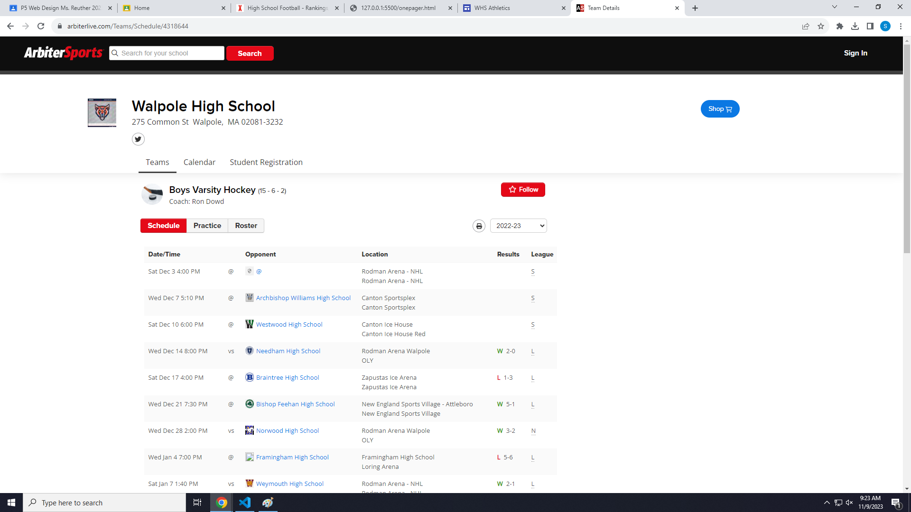
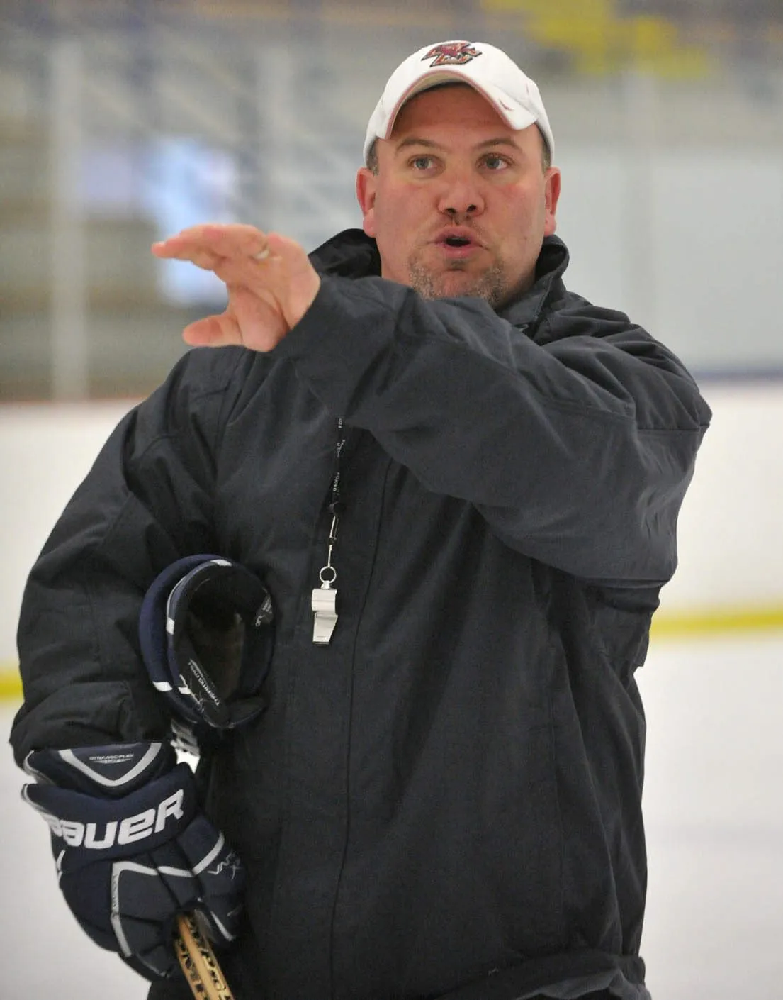

highlights of the playoffs
Title description, Dec 7, 2017

the 2022-2023 playoffs where very eventfull for this Walpole team with some of the highlights being ryan walshes 4 goal game leading the timberwolves to a 9-0 win over somervile in the second round of the playoffs and jason finks 6 goal game against auburn to send walpole to the final four.
A crushing defeat

the Timberwolves jumped to a early 1-0 lead in the final four but sadly that would be the only good news for the rest of the game as they quickly fell behind 5-1 and it stayed that way till the final buzzer.
Regualr season record

